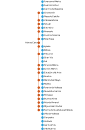
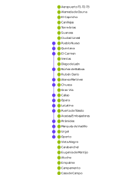
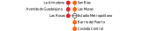
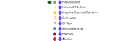
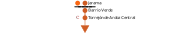
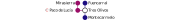
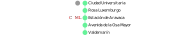
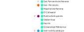

Después de una época de crisis con los avances paralizados o retrasados durante los años 10, se han empezado a estudiar y aprobar proyectos de ampliación de la red, mejoras de infraestructura y medidas de accesibilidad.
A fecha de hoy, 4 de enero de 2026, han finalizado las siguientes obras:
Las que todavía están en ejecución o en estudio son las siguientes:
Se ha recopilado una lista de propuestas de la comunidad para mejorar movilidad y conexiones que veremos a continuación.
La línea 4 tiene mucha demanda en horas punta y debería electrificarse a 1500VCC lo antes posible. De hecho, no se perdería el material rodante asignado, ya que es bitensión.
En primer lugar, semi-automatizar el material rodante: la conductora controlaría las puertas, el silbato, y otras características; pero cuando le da al botón de marcha, el tren se encarga de la aceleración. De esta manera se reduce el retraso provocado por estrés humano. Esto no implicaría reformar todos los trenes de una vez, sino unos pocos trenes cada pocos meses, ir probándolos y reintegrarlos en las líneas correspondientes.
En segundo lugar, también se propone hacer líneas paralelas estratégicas, que recorrerían el tramo más demandado de cada línea, y sin parar en las estaciones más congestionadas. Se han creado los siguientes esquemas:
|  |  |
Entre dicha estación y Las Rosas hay apenas algo más que 1km de distancia, y esa ampliación ayudaría al flujo con un coste relativamente bajo detrás. Para un poco más de detalle, consultar la siguiente imagen:
La norma que debe cumplir es no pasar por Atocha. El único servicio ferroviario que pasa por ese barrio es unas líneas de cercanías que pasan por Atocha, y por eso van congestionadas.
Ya que se propone una nueva línea para Entrevías, se ha pensado en conectarla con algunos puntos estratégicos, como se indica en el siguiente esquema:
El municipio de Torrejón de Ardoz es bastante denso y parte de la población usa el cercanías para ir a Madrid, pero las líneas de cercanías que pasan por dicho municipio van congestionadas porque paran en Atocha. Se ha propuesto una línea de metro que vaya de San Fernando a Torrejón de Ardoz, con la norma de que en San Fernando debe estar al aire libre o en túneles falsos, pero no bajo tierra, ya que el terreno de ese municipio no es apto para hacer túneles, además de que al lado hay un río cuya agua a veces se filtra en la línea 7B, parte de cuyo trazado está bajo Coslada y San Fernando. Se ha hecho una propuesta abierta:
La única manera ferroviaria de ir de Paco de Lucía a Tres Olivos o estaciones cercanas es hacer recorridos poco intuitivos. La ampliación haría mejor conexión con la zona y facilitaría la movilidad, tal y como se ve en el siguiente esquema:
Aravaca es otro barrio denso cuya población pide metro. Hasta ahora se ha propuesto ampliar la línea 3, pero eso aumentaría la congestión. Para no crear el efecto cuello de botella, conviene crear otra línea que inicie en Ciudad Universitaria y pare en puntos estratégicos del barrio de Aravaca. Se propone de la siguiente forma:
Se ha negado desde hace tiempo hacer un metro subterráneo para El Cañaveral, pero tal vez un metro al aire libre (o en túneles falsos), encaje mejor. Y ya que se hace un metro, conectaría los barrios de Vicálvaro y Vallecas sin depender del cercanías:
Puedes consultar un resumen de las propuestas de ampliación junto a la red aquí.